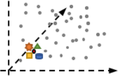

Subspace Nearest Neighbor Search - Problem Statement, Approaches, and Discussion

Venue. SISAP (2015)
Abstract. Computing the similarity between objects is a central task for many applications in the field of information retrieval and data mining. For finding k-nearest neighbors, typically a ranking is computed based on a predetermined set of data dimensions and a distance function, constant over all possible queries. However, many high-dimensional feature spaces contain a large number of dimensions, many of which may contain noise, irrelevant, redundant, or contradicting information. More specifically, the relevance of dimensions may depend on the query object itself, and in general, different dimension sets (subspaces) may be appropriate for a query. Approaches for feature selection or -weighting typically provide a global subspace selection, which may not be suitable for all possibly queries. In this position paper, we frame a new research problem, called subspace nearest neighbor search, aiming at multiple query-dependent subspaces for nearest neighbor search. We describe relevant problem characteristics, relate to existing approaches, and outline potential research directions.
Link to this page: